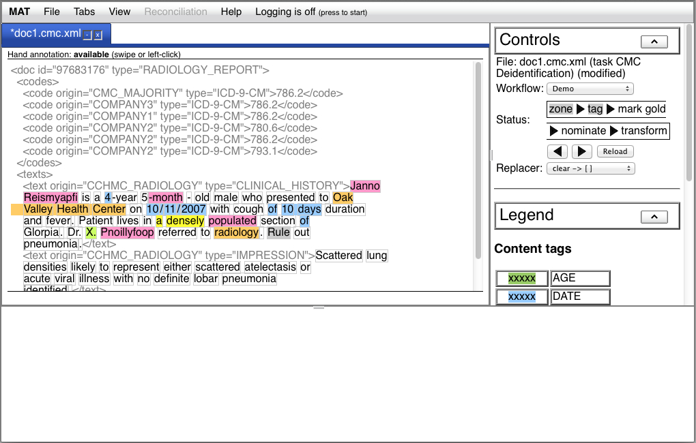
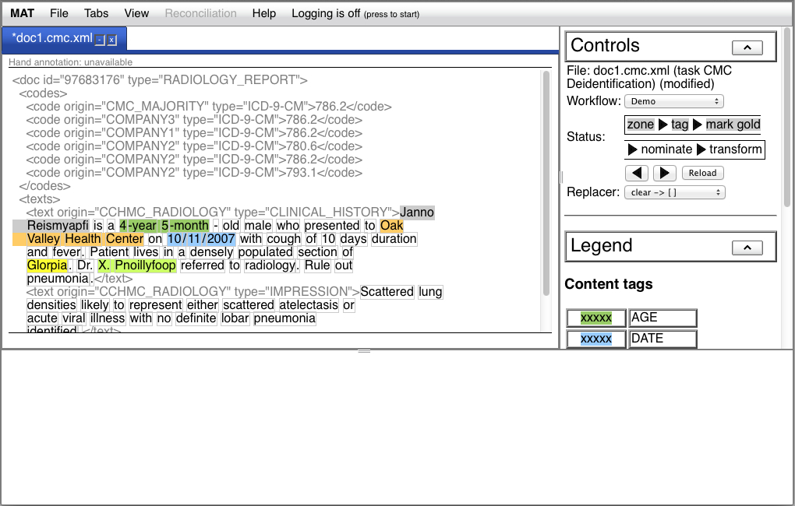
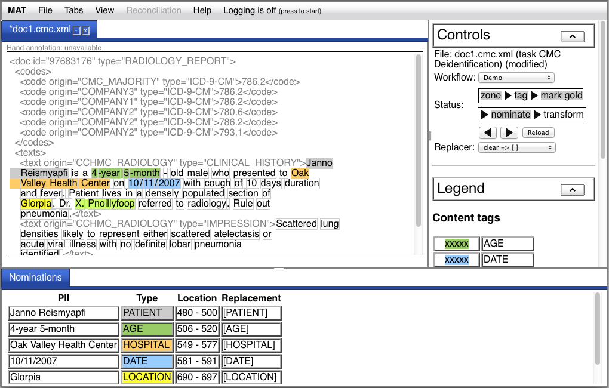
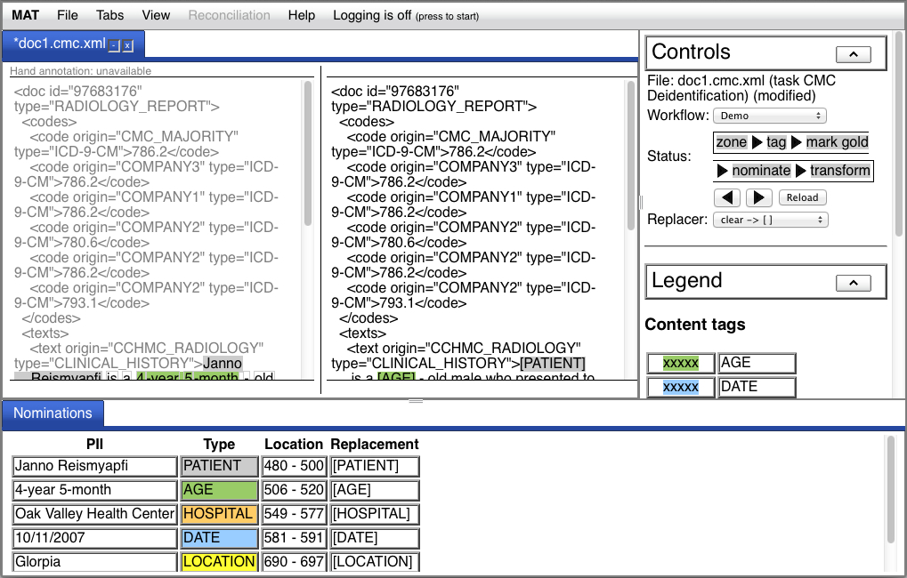
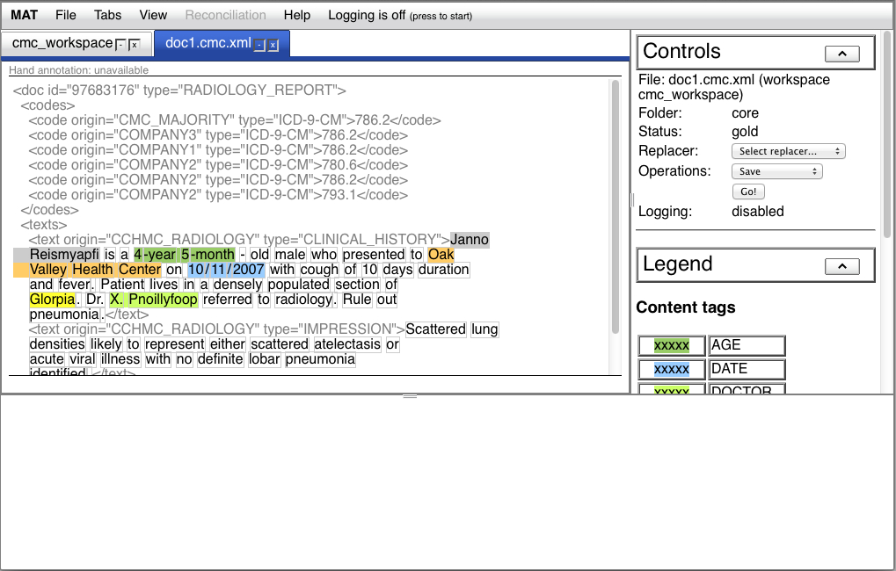
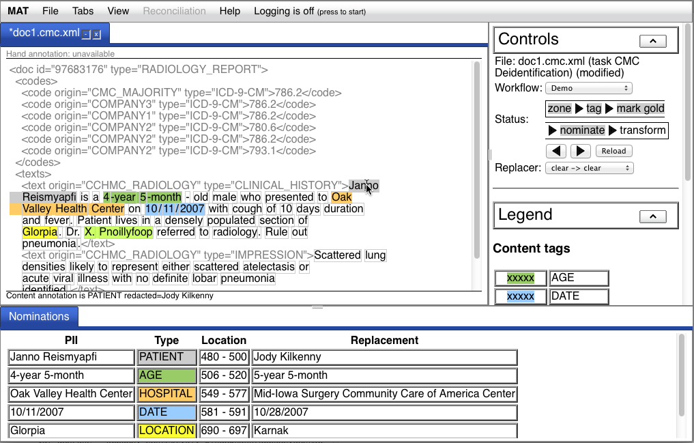
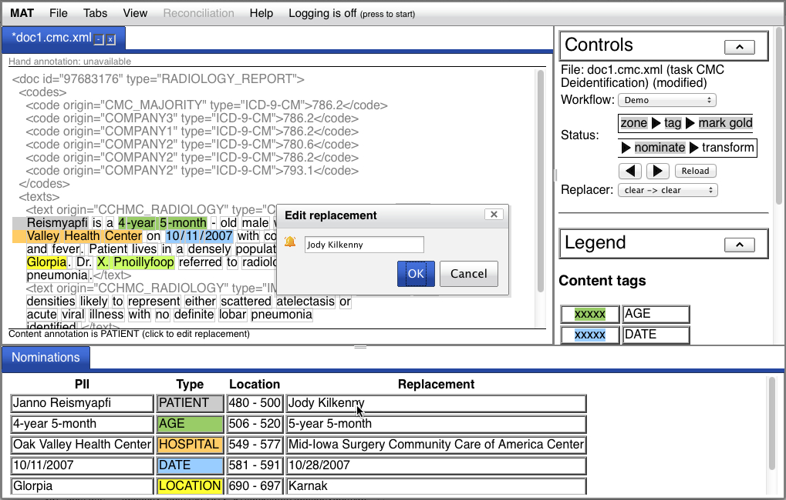
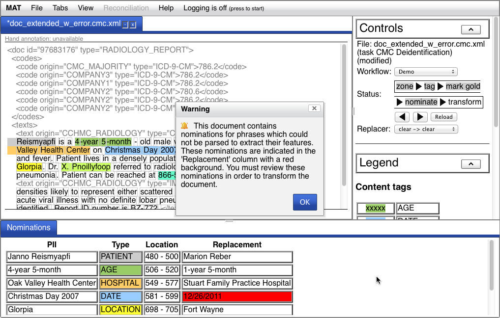
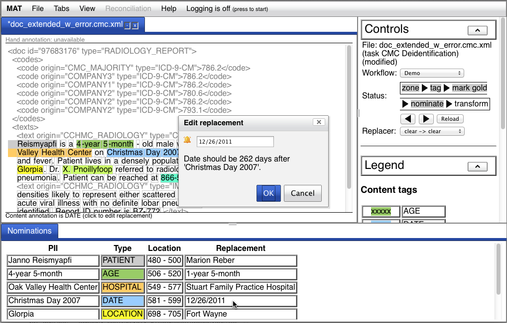

The core MIST deidentification system is implemented as a task
within the MAT toolkit. You will not use this core
deidentification task directly; rather, you'll be using a further
specialization of the core deidentification task, e.g., the AMIA
or HIPAA task. Each task is a child task of the parent task class,
named "Deidentification", and the implementation of each task is a
subclass of the Deidentification.DeidTaskDescriptor Python class.
You can see evidence of both these parent-child relationships in
the task.xml file for your particular deidentification task.
Creating new deidentification tasks is very, very complicated,
and we don't have the resources to document the process. Please
consult the specific deidentification tasks you have in your
distribution and use them as models if you absolutely need to
build your own task.
The zone and token annotations you'll use (see the discussion of
annotations here)
are just the default zone and token annotations. The content
annotations, which are the ones you'll add or correct, correspond
to the PII categories for your task: e.g., the HIPAA categories
for medical record deidentification. Refer to the documentation
for your specific deidentification task for more details.
As we describe here, steps
are the basic activities that you undertake in a document. E.g.,
the tokenize step
typically identifies the word boundaries in the text. The typical
deidentification task has the following steps:
Note that the tokenize step found in the sample MAT task is not
used explicitly in MIST.
The nominate step
requires a replacer,
which is a strategy for generating replacement phrases. We discuss
replacers below.
The typical deidentification task arranges these steps into a
number of workflows:
What's unusual about these four workflows is that the last of the
workflows applies to a different class of documents than the first
three. The resynthesize workflow is intended to apply to documents
which have been transformed into an obscure form, e.g., documents
which contain fillers like [PERSON] in place of the person names
in the original document. Under the resynthesize workflow, the tag
step is a simple pattern-matching operation, and the replacers
convert obscured documents into resynthesized documents. We
discuss resynthesis below.
The steps of the deidentification task require the following step
implementations:
| Step implementation name |
Description |
|---|---|
| Deidentification.MultiZoneStepForUndo |
This step provides default
undo capabilities for the compound zone step described
above. To be honest, it's not exactly clear why this
implementation is necessary. |
| Deidentification.ResynthZoneStep |
This step is a step which
does nothing, specifically in the case of zoning in the
Resynthesize workflow; no zoning is necessary, and we can't
permit the default zoning to apply. At the moment, the
Resynthesize workflow does not contain a zone step; this
implementation may exist for historical reasons. |
| Deidentification.ResynthTagStep |
The implementation of the tag
step in the Resynthesize workflow. This tag set merely needs
to do pattern-matching, rather than invoke an engine like
Carafe. |
| Deidentification.NominateStep |
The implementation of the
nominate step. |
| Deidentification.TransformStep |
The implementation of the
transform step. |
As described here,
steps can also take key-value pair arguments which can be
specified in the task.xml file or in the invocation of the MAT
engine. We document the arguments for these steps here.
The following options might be generally useful for the nominate
step:
| Command-line option |
XML attribute |
Value |
Description |
|---|---|---|---|
| --replacer |
replacer | one of the replacer UI names
shown below |
The name of the replacement
strategy to be used. If the workflow has more than one
replacer available, this setting is obligatory. This is most
likely the only one of these settings you'll ever use. |
| --replacement_map |
replacement_map | a string |
You can customize your
replacement using a JSON string which describes a set of
if-then rules which you can apply to your clear -> clear
match. See Customizing
deidentification
replacement below. |
| --replacement_map_file |
replacement_map_file | a filename |
You can also pass in your
replacement customization inside a file. |
| --dont_nominate |
dont_nominate | a string |
A comma-separated list of
labels for which nominations should not be proposed. By
default, nominations are proposed for all content
annotations. |
| --flag_unparseable_seeds |
flag_unparseable_seeds | a string |
A comma-separated list of
labels whose annotations should be flagged in "clear ->
clear" replacement (see below)
when the phrase in the original document could not be parsed
appropriately (and thus whose replacements might not have
the appropriate fidelity). Currently, only dates, URLs,
phone numbers, and can be flagged in this way; no labels are
flagged by default. Any flagged elements must be corrected
before the transform step is executed. |
The nominate step also accepts the following options, but they're
pretty exotic and you're very unlikely to use them (they're also
not particularly well tested or supported):
| Command-line option |
XML attribute |
Value |
Description |
|---|---|---|---|
| --cache_case_sensitivity |
cache_case_sensitivity | a semicolon-separated
sequence of tag names, e.g. 'PERSON;LOCATION' |
In some cases, the replacer
for the given tag maintains an internal cache, to ensure,
e.g., that variations in names are replaced consistently
throughout a document. Names and institutions are the most
obvious replacers which use a cache. By default, the caches
are not case-sensitive; this setting allows the user to
specify that some of them are. You will likely never need
this setting. |
| --cache_scope |
cache_scope | a semicolon-separated
sequence of <tag>,doc|batch|none, e.g.
'PERSON,batch;LOCATION;doc' |
By default, if there is a
cache for a tag replacer strategy, its scope is the
document; at each document boundary, the cache is flushed.
If you want to change this scope, you can declare that it
persists for the entire document batch ('batch') or turn off
cacheing entirely ('none'). You will likely never need this
setting. |
| --resource_file_repl |
resource_file_repl | a semicolon-separated
sequence of <file>=<repl> |
The replacement strategies
are driven by a large number of data files which are used as
sources for randomly created fillers. In some cases, you may
want to replace these files with files of your own. We're
not going to document the way this works, or how to use it,
because it's just too arcane; the source file
core/python/ReplacementEngine.py in the deidentification
source code will help you understand how to use it. |
The transform step allows you to insert a prologue into your
file.
| Command-line option |
XML attribute |
Value |
Description |
|---|---|---|---|
| --prologue |
prologue | a string |
Specify the text of a
prologue to insert into the transformed document. You may
wish to do this, e.g., to assert that all names in the
document are fake. This option takes preference over
--prologue_file. |
| --prologue_file |
prologue_file | a filename |
Specify a file which contains
the text of a prologue to insert into the transformed
document. You may wish to do this, e.g., to assert that all
names in the document are fake. The file is assumed to be in
UTF-8 encoding. --prologue takes preference over this
option. If the filename is not an absolute filename, it will
be interpreted relative to the directory of the task which
is being trained for. (This is because this option more
likely to be provided in your task.xml file rather than on
the command line.) Note: if you subsequently attempt to create a raw file from the transformed MAT document, you must save it using an appropriate encoding. E.g., if your prologue file contains characters which can't be encoded in ASCII, then you can't use the default ASCII output encoding for your raw file. |
| --dont_transform |
dont_transform | a string |
A comma-separated list of
annotation labels you do not want to convert when generating
a transformed document. E.g., you may want to generate a
variant of your transformed corpus in which dates aren't
redacted. |
Here's a standard use of MATEngine in this task. Let's say you
want to prepare a deidentified copy of a document with fake but
realistic English replacement PII elements, in rich format, and
you have a prologue in prologue.txt that you want to insert, and
you have a default model in your task. Here's how it works:
% $MAT_PKG_HOME/bin/MATEngine --task 'My Deid Task' --workflow Demo \
--steps 'zone,tag,nominate,transform' --replacer 'clear -> clear' \
--input_file /path/to/my/file.txt --input_file_type raw \
--output_file /path/to/my/resynth/file.txt.json --output_file_type mat-json \
--tagger_local --prologue_file prologue.txt
The --tagger_local option is required because by default,
the Carafe tagging task attempts to contact the tagging server.
MIST is distributed with a default feature specification file,
which provides reasonable performance. If you received MIST via a
zip distribution, the default Carafe feature specification for
MIST is found in src/tasks/core/resources/amia.fspec. You may want
to try to improve your performance by customizing these training
features. The Carafe
documentation will help you customize this feature
specification. You can provide this customized feature
specification to the trainer via the
--feature_spec option.
The Carafe engine supports the specification of lexicons to aid
in model training. Although the behavior in MIST doesn't differ
from that in the core MAT system, it's worth mentioning that the
capitalization in your lexicons interacts
with the Carafe feature specification. Please follow the
instructions carefully.
The sample experiment described here
is a good place to start for constructing experiments for the
MATExperimentEngine. The primary differences you should keep in
mind are:
So if your task is named 'My Deid Task', then your simple
experiment might look like this:
<experiment task='My Deid Task'>
<corpora dir="corpora">
<partition name="train" fraction=".8"/>
<partition name="test" fraction=".2"/>
<corpus name="deid">
<pattern>*.json</pattern>
</corpus>
</corpora>
<model_sets dir="model_sets">
<model_set name="deid_model">
<training_corpus corpus="deid" partition="train"/>
</model_set>
</model_sets>
<runs dir="runs">
<run_settings>
<args steps="zone,tag" workflow="Demo"/>
</run_settings>
<run name="test_run" model="deid_model">
<test_corpus corpus="deid" partition="test"/>
</run>
</runs>
</experiment>
In MIST 1.2, we added a (very experimental) capability to
customize the deidentification replacement. This capability is
available only with clear -> clear replacement. To understand
how to use it, you'll need to know a bit more about how the
replacement works.
Each replacement strategy consists of a digester and a renderer.
The digester produces a pattern which describes the features of
the digested element (e.g., for a phone number, was an area code
present). The digested pattern also contains the raw source
filler, and, in the case of the clear digester, the parsed form of
the input in some cases (e.g., for names and locations). The
renderer uses the pattern to generate its replacement, and, in the
case of the clear renderer, attempts to apply any customization
rules it finds.
The customization rules are provided to the nominate step either
with the replacement_map or the replacement_map_file option. The
replacement map is a JSON string which has the format described
immediately below; the replacement_map_file provides a filename
which contains such a string.
The JSON string described a JSON hash (object) whose keys are the
file basenames which you're trying to deidentify; e.g., if you're
trying to deidentify /path/to/my/file.txt as in the example above,
the key for that file would be "file.txt". As a special case, if
you're accessing the MIST capability via the Web service, the name
of the file should be "<cgi>". The values of these keys
should be another JSON object whose keys are the names of the
labels you're targeting. So if you have rules for file.txt which
target the DATE tag, your replacement map will look like this so
far:
{"file.txt": {"DATE": ...}}
The label key values are also JSON objects. These objects can
have two keys: caseSensitive (either true or false) and rules,
which should be a list of 2-element lists, where the first element
of each sublist is the antecedent and the second is the
consequent. The antecedent and consequent are each themselves JSON
objects. The antecedent is a recursive structure which describes a
subset of the digested pattern; the consequent contains two keys,
seed and pattern, each of which describe updates to the seed and
pattern, respectively.
Much of the details of this needs to be derived from the source
code, but we provide a couple examples here.
Let's say you want to replace all occurrences of the last name
"Marshall" for the NAME tag in the file file.txt with the last
name "Bigelow". Your specification will look like this:
{"file.txt":
{"NAME":
{"rules": [[{"parse": {"lastName": "Marshall"}}, {"seed": {"lastName": "Bigelow"}}]]}}}
All eligible rules apply. So if you want to replace the first
name "Betty" with the first name "Phyllis", you can add another
rule:
{"file.txt":
{"NAME":
{"rules": [[{"parse": {"lastName": "Marshall"}}, {"seed": {"lastName": "Bigelow"}}],
[{"parse": {"firstName": "Betty"}}, {"seed": {"firstNameAlts": ["Phyllis"]}}]]}}}
If you want to replace them only when they're together, do this:
{"file.txt":
{"NAME":
{"rules": [[{"parse": {"lastName": "Marshall", "firstName": "Betty"}},
{"seed": {"lastName": "Bigelow", "firstNameAlts": ["Phyllis"]}}]]}}}
If you only want to replace the literal string "Betty Marshall",
do this:
{"file.txt":
{"NAME":
{"rules": [[{"input": "Betty Marshall"},
{"seed": {"lastName": "Bigelow", "firstNameAlts": ["Phyllis"]}}]]}}}
(Note that the input key is available for all tags, while the
details of the parse and pattern keys differ from tag to tag).
Let's say you want to control how much dates are shifted (dates
are shifted by a consistent amount throughout a single document).
Do this:
{"file.txt":
{"DATE":
{"rules": [[{}, {"pattern": {"deltaDay": 5}}]]}}}
The deltaDay attribute of the pattern controls the date shift,
and this rule applies the shift to all dates (because the
antecedent is empty).
Finally, let's say you want to do a consistent substitution of
certain IDs, e.g., patient IDs, for correlation with an external
data escrow application which manages deidentification for your
structured records. If your tag is IDNUM, you can do this:
{"file.txt":
{"IDNUM":
{"rules": [[{"input": "PATNO67897"}, {"seed": {"id": "ID9938273"}}]]}}}
In the future, we hope to flesh out and further document this
capability.
The MAT toolkit comes with a Java API which allows you to read
and write MAT JSON documents, and access services provided by the
MATWeb application. You
can find documentation for the Java API under the "Core developer
documentation" in your documentation sidebar.
One common use of the Java API is in incorporating
deidentification capabilities in a larger Java application. Here's
a Java fragment which shows you how to do that. Remember, you must
make sure you have all the jars in the following directories in
your class path:
import java.util.*;
import org.mitre.mat.core.*;
import org.mitre.mat.engineclient.*;
String res = "";
/* Modify the URL as needed. Only the host and port are required. */
String url = "http://localhost:7801";
/* This should be the name of your task, as expted by MATEngine. */
String task = "HIPAA Deidentification";
/* This should be the name of the workflow, as expected by MATEngine. */
String workflow = "Demo";
/* This should be the step sequence to perform, as expected by MATEngine. */
String steps = "zone,tag,nominate,transform";
HashMap<String, String> attrMap = new HashMap<String, String>();
/* This should be the name of the replacer you want to use. */
attrMap.put("replacer", "clear -> clear");
MATDocument doc = new MATDocument();
/* Your input string is the argument to setSignal(). */
doc.setSignal("Hello World");
/* Here's where you connect to the server. */
MATCgiClient client = new MATCgiClient(url);
try {
MATDocument resultDoc = (MATDocument) client.doSteps(doc, task,
workflow, steps, attrMap);
res = resultDoc.getSignal();
} catch (MATEngineClientException ex) {
/* Handle the error. */
System.out.println("Processing failed: " + ex.getMessage());
}
/* Do something with the retrieved deidentified text. */
System.out.println(res);
As we describe here,
workspaces are actively-managed directory structures which
encapsulate the standard workflows in MAT. Workspaces in the
deidentification task have three extra document folders:
In addition, the core folder has two new operations:
redact clears and
populates the "redacted, rich" and "redacted, raw" folders in
parallel, by applying a replacer to the specified documents in the
core folder. This operation is intended to apply only to original
documents, to produce redacted documents; the inverse resynthesize
operation isn't available via the workspace. This operation is the
equivalent of performing both the nominate and transform steps
described above. It has the following options:
| Command-line option |
XML attribute |
Value |
Description |
|---|---|---|---|
| --replacer |
replacer | one of the replacer UI names
shown below |
The name of the replacement
strategy to be used. If the workflow has more than one
replacer available, this setting is obligatory. This is most
likely the only one of these settings you'll ever use. |
| --dont_limit_to_gold |
dont_limit_to_gold | "yes" (XML) |
Under normal circumstances,
the redaction will apply only to gold and reconciled
documents. If this flag is present, it applies to all
documents. |
| --retain_existing |
retain_existing | "yes" (XML) |
Don't clear the redacted
folders first. |
nominate performs just
the nominate step and inserts a copy of the document which is
decorated with nominations into the "nominated" folder. This
latter folder supports the transform
operation, which removes the document from the "nominated" folder
and performs the remainder of the redact operation. This alternative, two-step
workflow is provided for situations where the user wishes (or needs) to
review the nominations. It has the following options:
| Command-line option |
XML attribute |
Value |
Description |
|---|---|---|---|
| --replacer |
replacer | one of the replacer UI names
shown below |
The name of the replacement
strategy to be used. If the workflow has more than one
replacer available, this setting is obligatory. This is most
likely the only one of these settings you'll ever use. |
| --dont_limit_to_gold |
dont_limit_to_gold | "yes" (XML) |
Under normal circumstances,
the nomination will apply only to gold and reconciled
documents. If this flag is present, it applies to all
documents. |
As of version 2.0.2, the "nominated" folder now locks its files
for editing when they're shown in the UI. Accordingly, this folder
now supports the "force_unlock" operation on the command line,
analogous to the "core" folder.
The normal file and workspace mode document window configurations
described here and here. The
nomination and transformation steps require enhancements to the
UI, as shown in this section. The document exhibited is drawn from
the CMC free text corpus of deidentified radiology reports.
First, we show the result of the automated tag step:

Note not just the additional steps in the workflow, but also the menu labeled "Replacer" at the bottom of the Controls area. This menu allows you to select the replacement method for the PII elements. The nominate step requires a replacer; here we've selected "clear -> []". We correct the automated tagging output and mark it gold:

Now, we apply the nominate step:

Once the nominate step is completed, a table appears in a tab in
the details pane below the document showing each PII, along with
its type, its location in the document, and its proposed
replacement. The final transform step splits the document pane:

You'll also discover that the "File" menu in the menubar now has
a "Save replacement..." option which allows you to save the
replacement in the same way you can save the original document.
If you're in a workspace, the relevant point you'll notice a
difference is when you're viewing a document in the core folder
which you've marked gold:

Like the file mode case, the "Controls" area now has a replacer
menu, and the operations menu allows you to access the new redact
and nominate operations. Unlike file mode, the result of the
redact operation will be a new document tab, rather than a split
in the existing tab.
The new operations are available only when the document status is
gold. Note that your task may have a default replacer specified in
the workspace operation declaration in task.xml; if so, the
redact and nominate operations will not require that the replacer
be specified (but they will respect a menu selection if one is
made).
The UI has two important enhancements available at the conclusion of the nominate step. First, when you mouse over an annotation, the redaction is shown in the status line below the text as well as in the table below the main document pane:

In addition, if you're not satisfied with the replacement, you
can edit the replacement by clicking on the appropriate cell in
the "Replacement" column in the table below the main document
pane:

If you modify the replacement and click "OK", the result will be
what's used as the replacement (at least, as long as you don't
undo and redo the "nominate" step).
Note: this is not the
procedure for marking a previously unmarked PII; if you want to do
that, you have the opportunity after the "tag" step to review and
modify the automated annotations.
If you set up your task to flag unparseable seeds in the nominate step, the document will be marked in such a way that whenever it's presented, it will warn you that unparseable seeds are present and must be reviewed, and the nomination table 'Replacement' column will contain at least one cell with a red background:


If you attempt to transform the document before you clear all
these flags, the transform step will fail and you'll get an error.
The process in workspaces is quite similar. If you attempt the
"Redact" operation in the "core" folder, you'll get an error if
the nominate step generated any of these unparseable flags; in
this situation, you should employ the alternative two-step
workflow, by performing the "Nominate" operation instead.
The nomination step generates replacement fillers for the PII
elements identified by the content annotations. We identify two
types of replacement strategies:
The core deidentification system provides three basic types of
redaction:
The replacement engine first gathers a set of features from the input PII. For instance, in the case of names, it attempts to reproduce the number of tokens, the capitalization pattern, whether they correspond to a name with the last name first, etc. For dates, it attempts to preserve the offset from the earliest date in the document, as well as the specific details of how the date was formatted. Any features which cannot be determined from the input are assigned randomized values based on a weighted, hand-crafted estimation of the frequency of the possible values.
Once the feature values are determined, the engine generates replacement fillers. In the case of redaction, the fillers are trivially produced from the gathered features; in the case of resynthesis, the problem is considerably more complex, because our target is realistic English clear text. In the resynthesis case, the tokens for the replacement fillers are drawn from a variety of sources, including weighted lists of first and last names provided by the US Census, and lists of cities, states, streets, medical facilities and ZIP codes derived from various on-line resources. The replacement fillers are assembled based on the features the engine has already gathered; so, for instance, if the engine has determined that a name consists of a last name followed by a first name and an initial (as it might determine from a pattern like **NAME[AAA, BBB M] or a PII such as "Philips, Bruce R."), it will generate a new filler like “Ahmad, Jane Q”. Similarly, date offsets are preserved, so that the pair of dates Jan. 17 and Jan. 20 are shifted, but the 3 day difference is preserved. The engine also caches replaced name tokens on a document-by-document basis; so "AAA" will correspond to "Ahmad" throughout the document shown.
The resynthesis engine can be modified in a number of ways: where the replacement fillers are drawn from (e.g., an external lexicon or the corpus itself), how the fillers are constructed (whether they're replaced whole or reconstructed token-by-token), and how the fillers are cached for repetition (by document, by corpus, or without any cacheing). We will not document those customizations right now.
Each workflow in this task can be associated with replacers. This
is specified in the <settings> section of task.xml. The
specification pairs attribute-value settings, where the first
attribute-value pair is an arbitrary name of a replacer set and a
comma-separated list of replacer implementations, and the second
attribute-value pair is "<name>_workflows" and a
comma-separated list of workflow names. The interpretation is that
the specified replacers are available during the nomination step
of the specified workflows. Here's an example:
<settings>
<setting>
<name>redaction_replacers</name>
<value>BracketReplacementEngine.BracketReplacementEngine,CharacterReplacementEngine.CharacterReplacementEngine,ClearReplacementStrategy.ClearReplacementEngine</value>
</setting>
<setting>
<name>redaction_replacers_workflows</name>
<value>Demo,Hand annotation,Review/repair</value>
</setting>
<setting>
<name>resynthesis_replacers</name>
<value>BracketReplacementEngine.BracketResynthesisEngine</value>
</setting>
<setting>
<name>resynthesis_replacers_workflows</name>
<value>Resynthesize</value>
</setting>
</settings>
So the interpretation here is that the "Resynthesize" workflow
has the replacer BracketReplacementEngine.BracketResynthesisEngine
available, and the other three workflows have the other replacers
available.
Here are the available default replacers:
| Implementation |
UI name |
Description |
|---|---|---|
| BracketReplacementEngine.BracketReplacementEngine |
clear -> [ ] |
Maps clear text PIIs to the
bracketed name of the tag, e.g., "John Smith" ->
"[PERSON]" |
| CharacterReplacementEngine.CharacterReplacementEngine |
clear -> char repl |
Obscures clear text PIIs by replacing alphanumeric characters with characters of the same type: "John Smith" -> "Pqty Muwqd" |
| ClearReplacementStrategy.ClearReplacementEngine |
clear -> clear |
Replaces clear text PIIs with
fake, synthesized but realistic clear text PIIs |
| BracketReplacementEngine.BracketResynthesisEngine |
[ ] -> clear |
Maps PIIs obscured with the
BracketReplacementEngine to clear text |
There are also replacers available to manage the De-ID-style
replacement, but those have to be customized in a child task.
At some point, you may want to define your own deidentification
task. We really don't recommend this, because much of the magic to
make this work is undocumented. If you must do this, start by
copying the entire directory structure of an existing
deidentification task (your distribution will contain at least
one). Do not copy the core task.
Once you've copied the task directory, you'll need to make the
following changes to that task to so that MIST can recognize it:
The replacement engine can be run independently of MIST, from
either Python or Java. The instructions for setting up this
option, as well as supporting code, can be found in
src/tasks/core/standalone. See the README file in that directory
for further details.